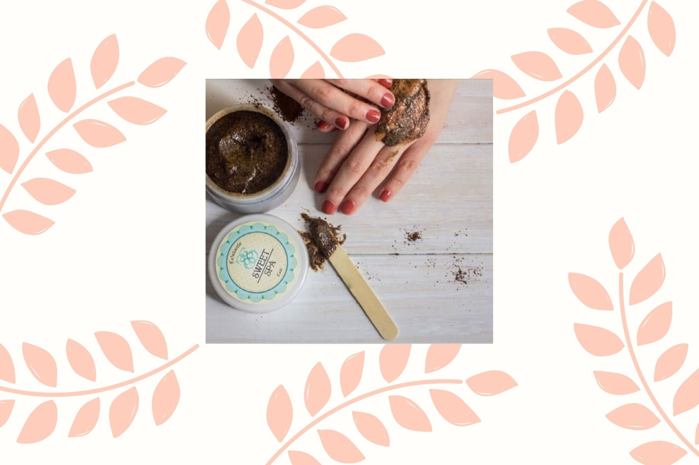

Las Teresas Tips
Porque queremos que estés radiante siempre

Dapop Black Mask
Instrucciones de Uso:
- 1.Limpie su piel, utilice calor para abrir los poros en la cara.
- 2.Utilice una cantidad apropiada de mascarilla para aplicar, principalmente en las zonas con puntos negros.
- 3.Espere a que la máscara seque durante unos 10/15min.
- 4. Despegue la mascarilla de arriba hacia abajo de forma uniforme.
- 5. Cierre los poros con agua fria.



3 RAZONES POR LAS QUE DEBES EXFOLIAR LA PIEL DE TU CUERPO:
- 1.Para eliminar las células muertas que se acumulan en la superficie de la piel.
- 2.Acelera la regeneración celular y la microcirculación sanguínea.
- 3.La piel retoma su suavidad y flexibilidad natural. Esto hace que esté preparada para absorber los nutrientes y principios activos de productos humectantes y rejuvenecimiento.
¿Ya sabes por qué tienes que exfoliar tu piel al menos una vez a la semana?

Velas de soja
Uso y cuidado:
- Al encender la vela por primera vez, esperar a que la cera se derrita al diámetro total del frasco antes de apagarla, para consumirla con prolijidad.
- No mantener encendida por más de 3/4 horas seguidas.
- Esperar a que se encuentre completamente sólida para volver a encenderla y cortar 1mm de pábilo previo a hacerlo.
- Es bueno mantener lejos del sol y del calor intenso, ya que son sensibles.
Nunca deje una vela encendida sin vigilancia